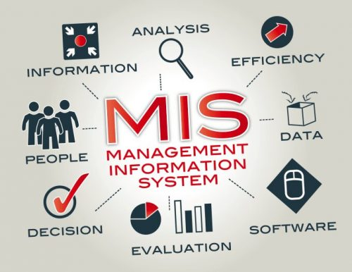

Yönetim Bilişim Sistemleri, insan, teknoloji, sistem teorisi ve bilgi yönetimi alanlarını bir araya getiren akademik bir alandır. Yöneticilerin karar vermesini kolaylaştırmak için, değişik yerlerdeki bilgilerin toparlanarak, bütün halinde sunmak, Yönetim Bilişim Sistemleri'nin en önemli görevlerinden biridir.Bilgi günümüz toplumlarında stratejik bir kaynak haline gelmiştir.Bu açıdan düşündüğümüzde bilginin yönetilmesi gerekmektedir.Bu amaç doğrultusunda yönetim bilişim sistemleri; bilginin sürekli üretilmesi, yenilenmesi ve yayılmasında gerçekleştirdiği çalışmalarıyla bize iki dünyanın birleşimini sunuyor adeta. Bu birleşen iki unsur: İşletme ve Bilgisayar Mühendisliği. Bilgisayar sistemleriyle elde edilen bilgileri, işletmenin içindeki işlere, yönetim fonksiyonlarına, iş süreçlerine, işletme problemlerine aktarıyor. Yönetim Bilişim Sistemleri bu noktada teknolojiyi bir araç değil bir sonuç olarak kullanıyor.
